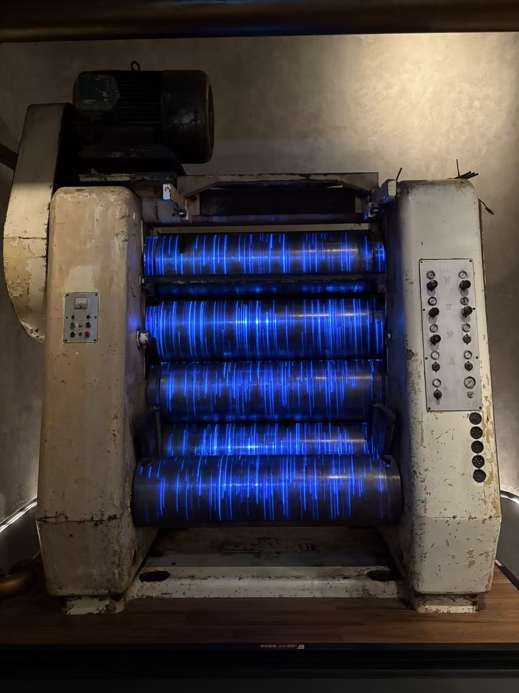
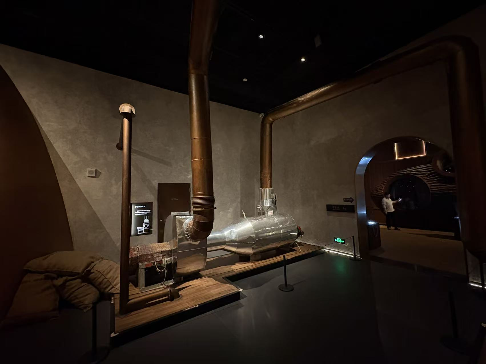
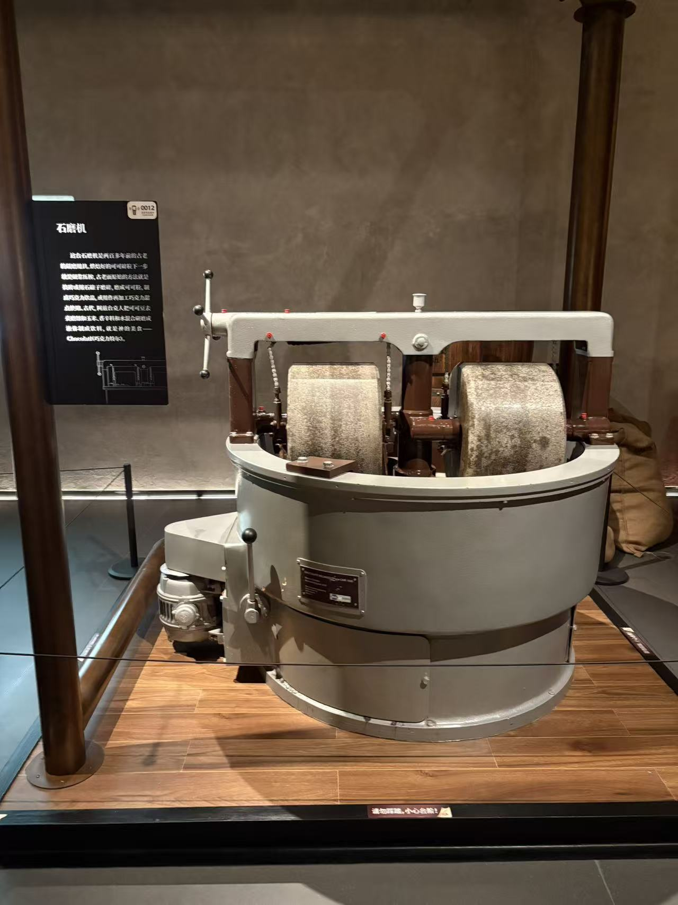
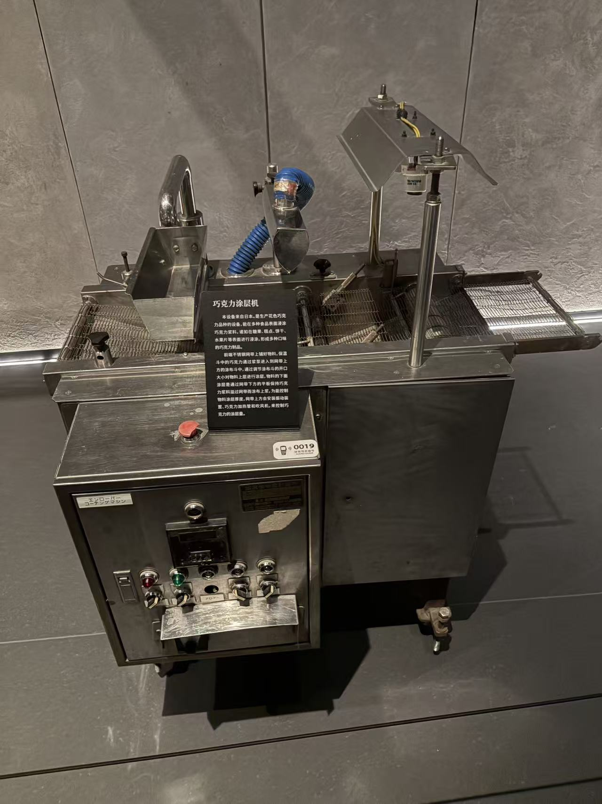
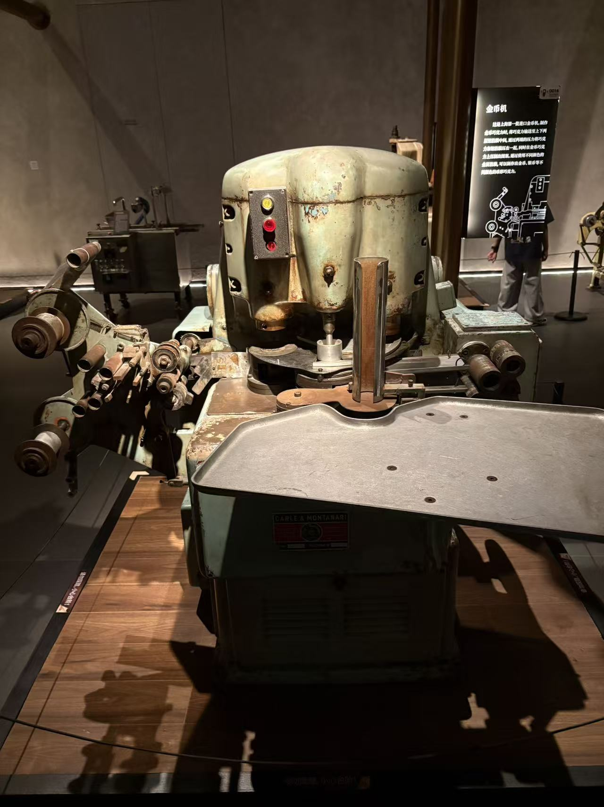
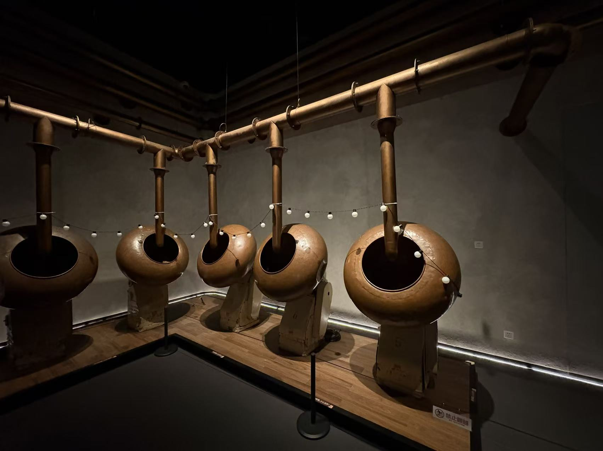
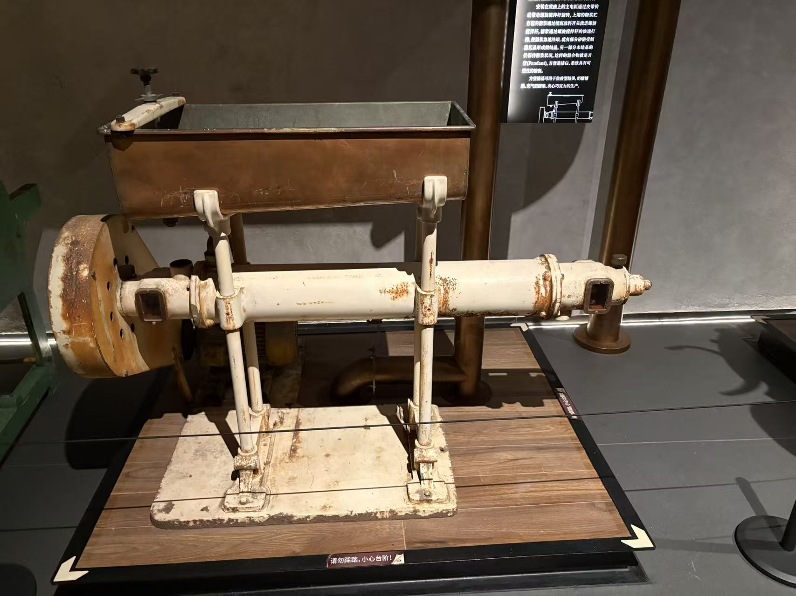
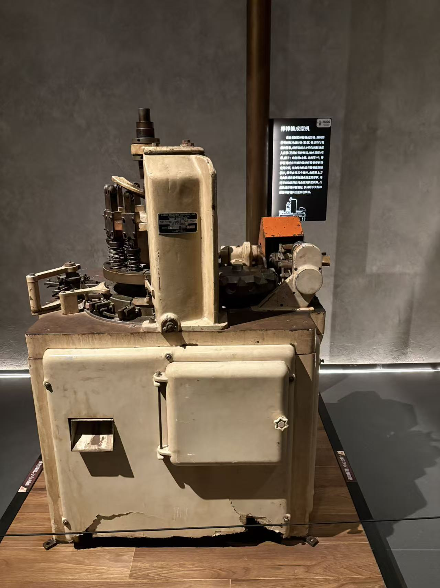
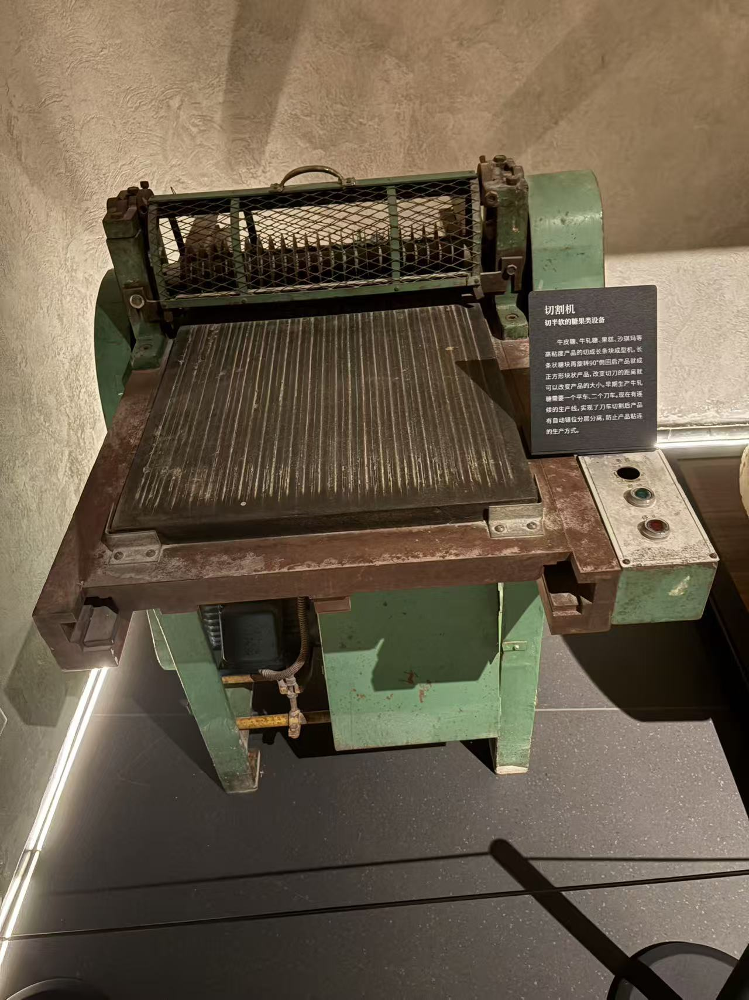
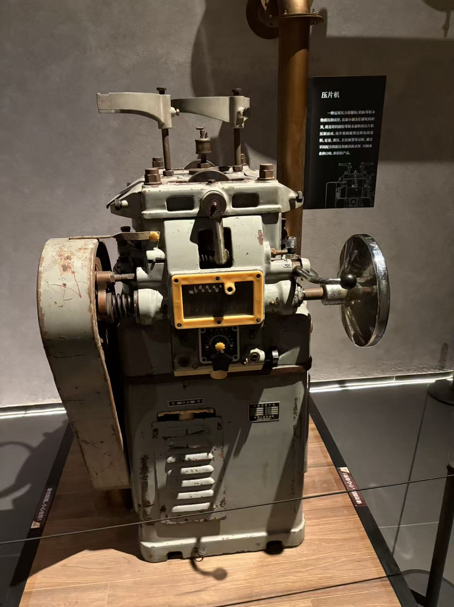

01巧克力工艺 / 8 个环节
基础巧克力
所有巧克力分支的共同基础：研磨、精炼与调温。
阅读图解
你的实拍 · 照片 08设备观察室 / 02 台已上线
不只看机器，也看物料怎样改变。

设备实拍 · 外形参照60 秒 / 4 阶段原料加工 / 石磨机
观察石辊与盘面的相对运动，看颗粒细化、形成浆态。

设备实拍 · 外形参照75 秒 / 5 阶段产品包覆 / 涂层机
跟随芯体经过淋涂与控量，再进入独立冷却示意区。
进入设备页 → 加载 3D 模型 → 主动播放；也可暂停、旋转或逐步查看。
典型原理示意，非展品真实传动复原。时长为教学编排，3D 请通过本地 HTTP 预览。
先建立一张地图
磨细、精炼、调温，再走向不同形状。
按糖浆或糖体状态，选择模压、搅打或切块。
不走巧克力调温，也不是硬糖熬煮。
选一种产品，跟着流程走
先读基础，再按兴趣分流。

01巧克力工艺 / 8 个环节
所有巧克力分支的共同基础：研磨、精炼与调温。
阅读图解
02巧克力工艺 / 5 个环节
先制币形巧克力坯，再覆箔、包合和压印图案。
阅读图解巧克力工艺 / 5 个环节
芯体走网带，淋涂与底涂包覆，再控量、冷却。
阅读图解
04巧克力工艺 / 5 个环节
芯体在锅内滚动，分次包衣、冷风凝固，最后抛光。
阅读图解
05巧克力工艺 / 5 个环节
主讲制壳、填馅、封底；同时对照先做糖芯的涂层路线。
阅读图解
06糖果工艺 / 6 个环节
熬糖、冷却到可塑状态，再均条、切块、插棒和压模。
阅读图解糖果工艺 / 5 个环节
浓缩糖浆经受控冷却和搅打，成为细小糖晶体糖膏。
阅读图解
08糖果工艺 / 5 个环节
糖体前端各不相同，共同后段是调理、整形与纵横切割。
阅读图解
09糖果工艺 / 5 个环节
粉料准备和混合后，定量填模、预压、主压，再出片包装。
阅读图解关于这本图解手册
照片是起点，不是工厂的完整档案。
不按拍摄顺序编排，而按物料流向讲解。
在对应步骤查看设备照片，点击放大；有清晰展牌的，附展牌入口。保留原图，不给未知设备硬贴身份。
用行业组织和制造商资料解释未拍到的环节。补充图片标明作者与许可；各页末尾列出参考链接。
展示的是典型制作逻辑，不是特定工厂的设备配置或配方。原料、温度、时间和检验限值仍需专业验证。